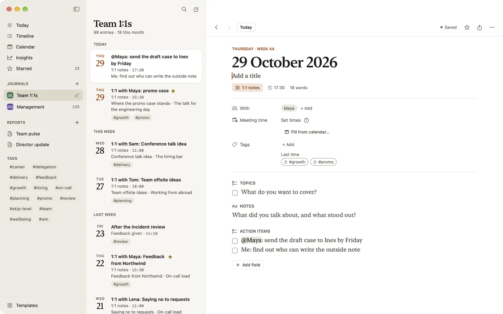
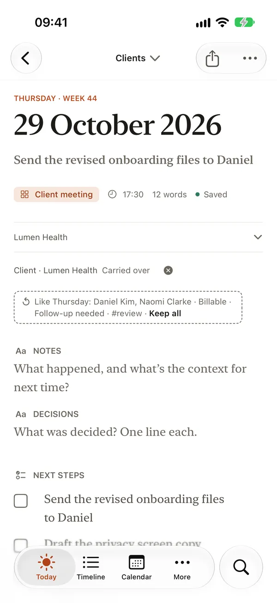

Carry-over between entries
Work continues from one day to the next, and from one meeting to the next. Carry-over brings what’s still relevant into your new entry: the project you’re on, the client you’re working for, the action items nobody has ticked yet. You start where you left off instead of copying things across.
What carries over
A field carries over when its template says so. When you make a new entry, each of those fields is filled from the previous entry: the most recent entry in the same journal, made from the same template, dated before the new one. An entry you backdate carries from the one before its own date.
- Values are copied, not linked. Changing the new entry never changes the old one.
- Checklists carry only unticked items. What you ticked stays behind, so a checklist becomes a list of things still to do.
- Attachments, location, weather and one-off fields never carry. Rich text carries without its pictures and files.
Some of the library’s templates that carry over:
| Template | Carries |
|---|---|
| Daily standup | Project, Working on |
| 1:1 notes | Action items, for the same person |
| Meeting notes | Action items, for the same attendees |
| Client meeting | Client, Next steps |
| Project status update | Client, Next steps |
| Customer call | Account, Next steps, for the same contact |
| Site inspection log | Actions, for the same site |
To change which fields carry, open the template in the template editor, select a field and switch Carry over from previous entry on or off. See Templates and fields.
It follows the person or the client
On a template about people, clients or sites, “the previous entry” means the previous one with the same people, the same client or the same site. Maya’s action items never land on Sam’s page, one client’s next steps never reach another’s, and a site’s open items stay with it.
Templates that start with a person
1:1 notes starts with With, Meeting notes with Attendees, and Customer call with Contact. A new page from one of them starts with its carried fields empty. As soon as you set the person, whether by typing the name, filling the meeting from your calendar or tapping an attendee chip, the carried fields fill from that person’s latest page. It’s one step, so Undo takes it back.
Choose someone else and Dayfolio takes back what the first person’s page brought, unless you’ve changed it, and fills in the new person’s. Remove the person and the carried fields empty again. In the entry itself, this happens on a page made today.

Templates that start with a client
Client meeting and Project status update start with Client, and Deal update with Deal. A new page starts with the latest page’s client and what that page carried. Choose another client and you get that client’s open items instead.
Templates that start with a site
Site inspection log starts with Site, and Accessibility audit with Surface. The site itself doesn’t carry over, but its open items do, and they stay with it: a new page waits for its site, as a 1:1 waits for its person, and choosing the site brings that site’s unticked Actions (Fixes needed in an audit) from its latest page, never another site’s.
The carried mark
On an entry made today, a project or person that was carried over says Carried over after its name, with a button to clear it. It tells you the value came from last time rather than from you. Change the field in any way and the mark goes. On iPhone and iPad, where an entry opens with its values folded into a summary, each marked field also has its own line under the summary, such as “Client · Lumen Health Carried over”, so the fold never hides it.

Carry-over or last time’s values
Both bring back what you wrote before, in different ways:
- Carry-over fills the field when the entry is made. Use it for things that usually stay the same: the project, the client, open action items.
- Last time’s values are shown faintly in an empty field and filled only when you tap them. They suit things that often change, such as a status or tags. See Templates and fields.
When you keep the same last-time value three entries in a row, Dayfolio offers to turn on carry-over for that field.
Meetings from your calendar
Templates with a person field and a meeting time, such as 1:1 notes and Meeting notes, show Fill from calendar… beside the time. The first time, Dayfolio asks for access to your calendar; it reads your calendar on your device and never sends it anywhere.
- Choose Fill from calendar… and pick one of today’s meetings.
- Dayfolio fills in the meeting time, the attendees you already have as people, and the title if it’s empty.
- Attendees it doesn’t know yet show as chips, such as “Add Anna Kowalska?”. Nobody is added until you tap one.
Once calendar access is on, Settings › Privacy › Suggest notes after meetings lets Today offer a card after a meeting with other people: “Start meeting notes” makes the entry with the time and attendees filled in. A meeting that reads like a 1:1, by its title or because it had just one other person, starts from a 1:1 template when you have one, so the person lands in With and their open action items follow.
Still open
Everything that carries over is also gathered in one place. Tap a person’s or project’s name in an entry and choose Entries with … (Entries for … for a project): the page for that name lists Still open, the unticked items of checklists that carry over, from the latest entry of each template that mentions the name, such as “Draft the DLQ design doc · open since 29 September”. Agendas, such as 1:1 notes’ Topics and Meeting notes’ Agenda, don’t carry over, so they’re not listed. See People and projects.